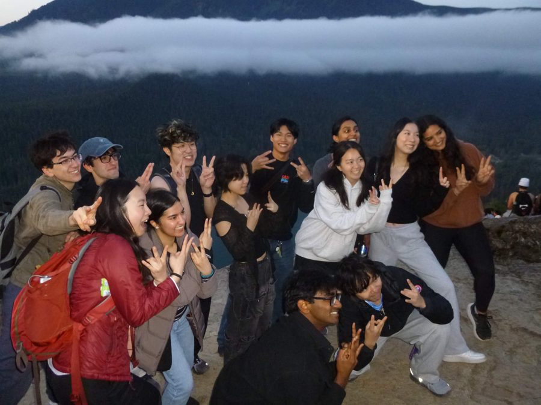
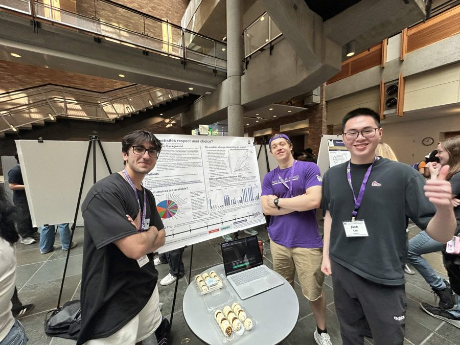

Daniel Ballesteros
linkedin.com/in/ballesteros-daniel/
|
github.com/danioball
About Me
Hey! My name's Dani and I'm a 3rd year at the University of Washington. I like playing guitar, rock climbing, and building cool things! This website is still a work in progress, but expect some updates soon.
Teaching

I started as a Teaching Assistant for the Allen School in September of 2025, running bi-weekly quiz sections for 20+ students at a time, giving detailed feedback on assignments and exams, and holding office hours to help people work through data structures, debugging, and code tracing. That turned into a Section Lead role in April of 2026, where I now build the teaching materials the rest of our TA staff uses, including slide decks, practice problems and solution sets.
Research

In January of 2026 I joined a research project looking at cookie consent banners, which entailed figuring out how often websites use deceptive design or misleading language to get you to click "accept," and where that runs into conflict with privacy law. We used Selenium to do the web scraping, paired with qualitative analysis of the language and design choices at play. The project as a whole got me interested in the intersection of privacy, web design, and legal compliance. We got to present the work at UW's Undergraduate Research Symposium, taking home the people's choice award.
Community
I got involved with the Computing Community at UW (formerly ACM) as an Associate Officer back in October of 2024, helping put together community-building and academic support initiatives that connected mentors with students. In September of 2025 I moved into the Education Director role, where I planned and hosted the technical, outreach, and career development events we run for the Allen School. I also co-hosted the COMversations podcast, a podcast where we interview professors and students in computer science, which you can find on spotify!